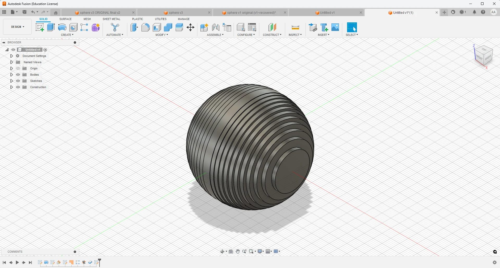
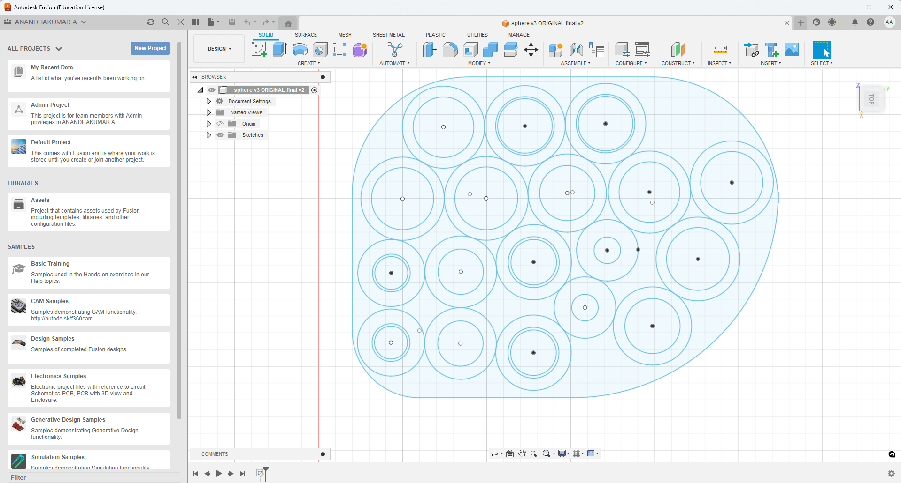
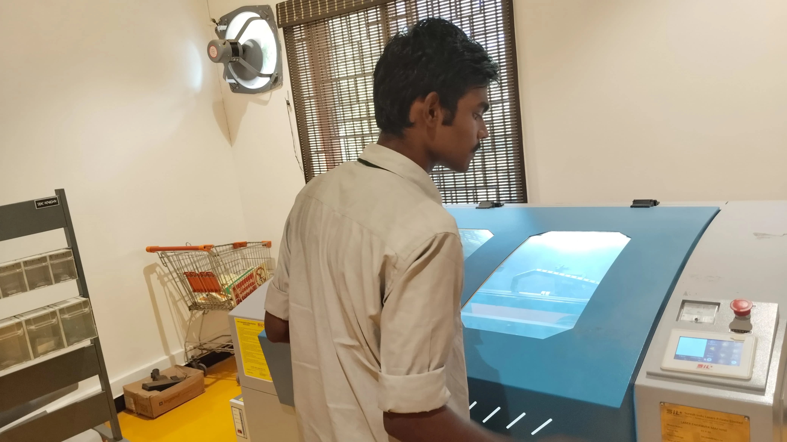
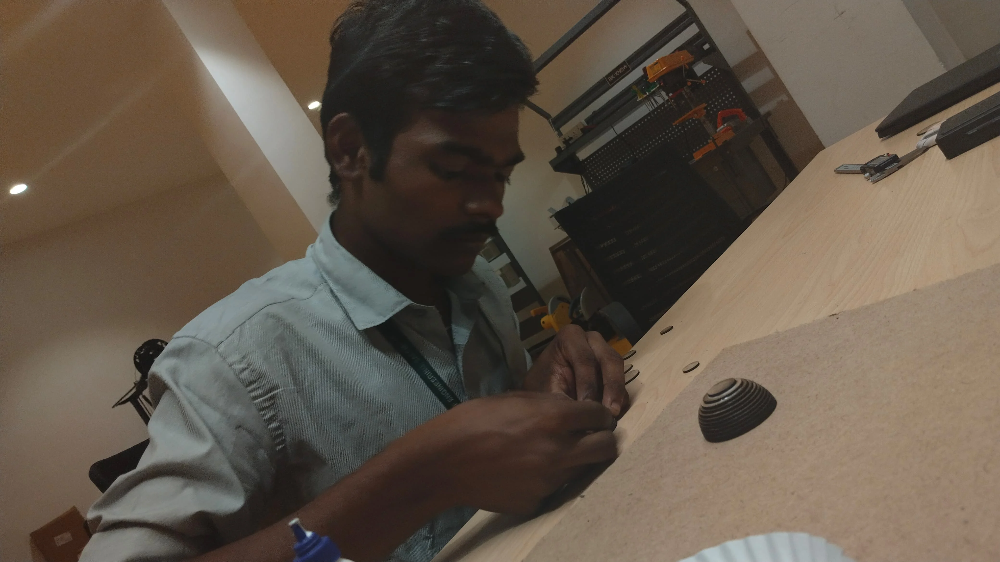
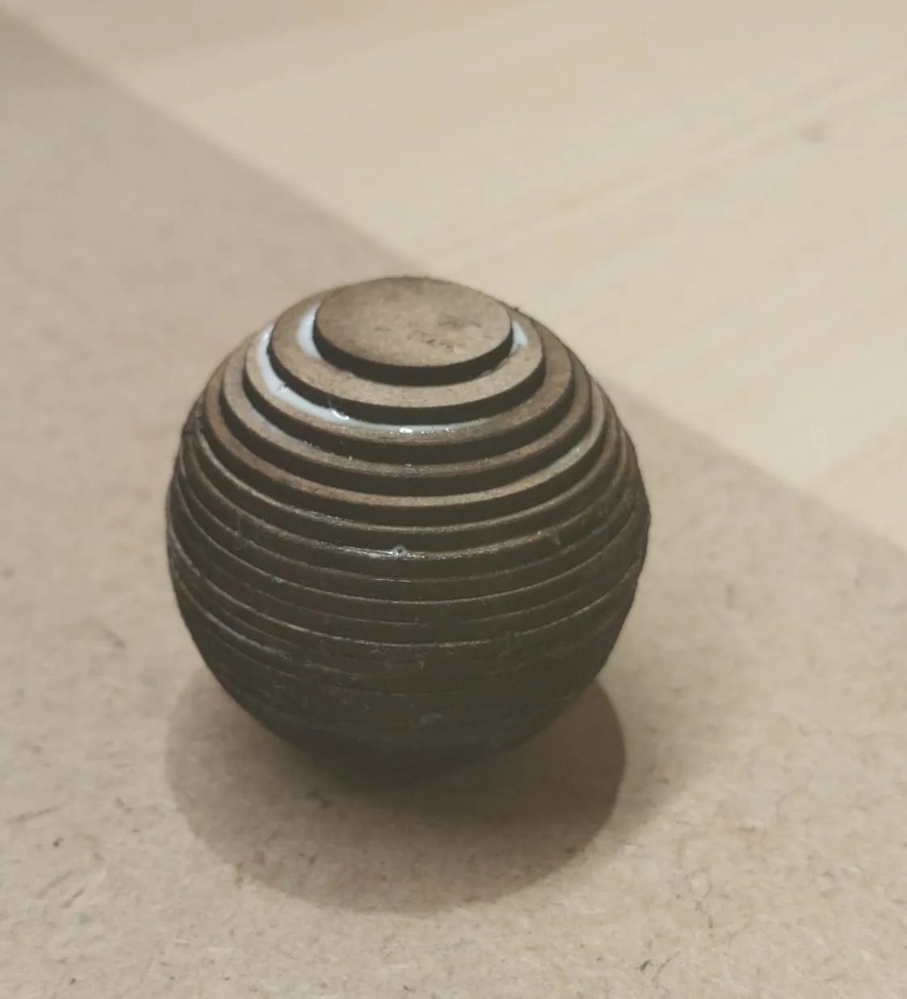

Hollow Sphere Fabrication Using Laser Cutting
Introduction
Creating a precise hollow sphere using laser cutting requires careful planning and execution. The goal of this assignment was to design and fabricate a sphere where the internal diameter is 75% of the outer diameter, ensuring structural integrity while optimizing material usage. For this purpose, we selected Medium Density Fiberboard (MDF) with a thickness of 2mm as the material of choice.
Several construction methods were considered for achieving a spherical shape, each with distinct advantages and challenges. Ultimately, the Layered Contours Method was chosen for its simplicity, durability, and ease of fabrication.
Design and Fabrication Methods Considered
1. Volleyball, Tennis Ball, or Basketball Style
- Uses curved interlocking rings that slot together perpendicularly.
- Simple to assemble but requires precise slotting to match MDF thickness.
- Suitable for creating smooth, rounded structures.
2. Football Style (Buckminster Fuller Geodesic Sphere)
- Provides geometric accuracy and a structured form.
- Can be assembled using glue or press-fit joints.
3. 4V Dome (Geodesic Sphere)
- Built using triangular or hexagonal panels.
- Offers a smoother finish compared to the Football Style.
- Requires precise laser-cut tabs and slots for assembly.
4. Cone Shape Method
- Approximates a sphere by stacking conical segments.
- Requires bending and connection of each segment.
- Suitable for artistic or aesthetic projects.
5. Half-Sphere Method
- Constructs only half of the sphere using the slotted ring technique.
- Ideal for display models or lamp covers.
6. Layered Contours Method (Chosen Approach)
- Forms a sphere by stacking 2D circular layers with varying diameters.
- Ensures durability and simplicity in fabrication.
- Does not require bending or kerf adjustments.
- Requires adhesive for assembly due to the absence of an interlocking mechanism.
Considering the precision, ease of execution, and material efficiency, the Layered Contours Method was selected for this assignment.
Design Process in Fusion 360
3D Model Creation
- Designed a hollow sphere with a 50mm outer diameter and a 37.5mm internal diameter.
- Ensured uniform wall thickness to maintain structural integrity.
Slicing the Model


- The model was sliced into 25 layers, each 2mm thick, matching the MDF sheet thickness.
- Slicing ensured a seamless and symmetrical assembly when stacked together.
Conversion to 2D Sketches

- As laser cutting requires flat patterns, the sliced layers were converted into 2D sketches.
- The sketches were optimized to minimize material waste.
Exporting for Laser Cutting
- As laser cutting requires flat patterns, the sliced layers were converted into 2D sketches.
- The sketches were optimized to minimize material waste.
Laser Cutting Process
Importing into LaserCAD

- The DXF files were imported into LaserCAD software.
- The slices were arranged optimally to maximize material efficiency.
Setting Laser Cutter Parameters
- Power: 60%
- Speed: 30mm/s
- These settings ensured precise cutting while minimizing burn marks on 2mm MDF sheets.
Laser Cutting Execution


- The layers were cut sequentially, ensuring high precision and consistency.
- The cut pieces were carefully removed to prevent damage.
Assembly Process
Stacking the Layers
- The layers were aligned precisely to maintain the required inner (37.5mm) and outer (50mm) diameters.
Gluing for Structural Integrity

- The layers were glued together using wood adhesive.
- Careful application ensured strong bonding without excessive adhesive leakage.
Assignment Outcomes

- A precisely cut and well-structured hollow sphere was successfully fabricated.
- The Layered Contours Method proved to be an efficient and material-saving approach.
- The use of Fusion 360 for design and LaserCAD for execution ensured high accuracy and precision.
- The assignment demonstrated the effectiveness of laser cutting in producing complex geometries with ease.